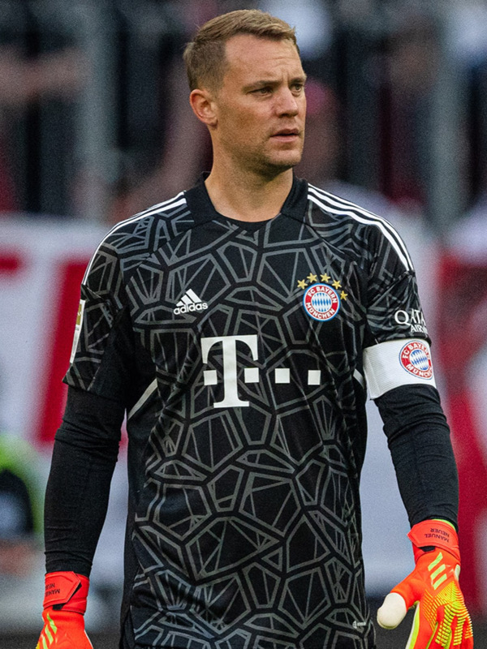

Manuel Neuer
Player Information
First Name: Manuel
Last Name: Neuer
Number: 1
Date of Birth: March 27, 1986
Age: 37
Height: 193cm / 6'4"
Dominant Foot: Right
Nationality: Germany
Positions: GK
Background
Statistics
Statistics for Neuer's 2021-22 Bundesliga season:
- Appearances: 28
- Goals: 0
- Assists: 0
- Yellow Cards: 0
- Red Cards: 0
Play Style
Manuel Neuer is a unique goalkeeper whose playing style perfectly complements Bayern Munich. Neuer is known for revolutionizing the position of the goalkeeper in world of soccer. Traditionally, goalkeepers were known to only stay inside their box, very rarely going outside of it. Their role was mostly restricted to catching opposition shots or deflecting them. They exclusively used their hands, using their feet only when necessary. Neuer, however, crafted his own interpretation of the goalkeeping role. Going outside the box is his trademark. His tendency to move up, often all the way to the middle of the field, has saved Bayern in multiple occasions. Being an attacking-oriented team, Bayern play a very high defensive line. As a result, the defense is prone to counter attacks from long passes. That is when Neuer comes in. His high positioning allows him to intercept long passes that go behind Bayern's defense. Additionally, Neuer has an exceptional ball controlling ability. He knows how to dribble and make precise passes, which is very unusual for a typical goalkeeper. This ability helps him when he's high up on the field. He can recycle the ball when Bayern players are pressured, becoming an additional passing option. Alternatively, he can make a good long pass to Bayern's forwards, which can quickly turn into a promising play. Neuer is also a great leader on the pitch, being Bayern's captain for about a decade. His influence on the pitch, both in terms of leadership and playing style, was a major cause of Bayern's success in recent years.